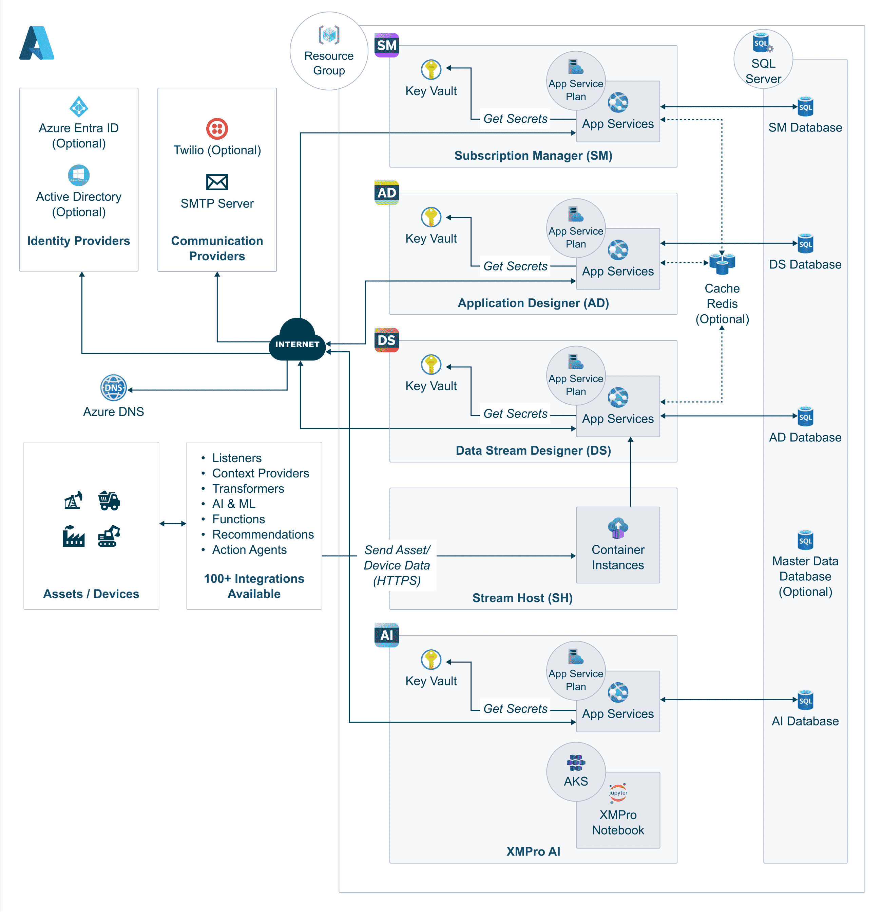

Azure Terraform Deployment
Introduction
This guide covers deploying XMPro on Azure using Terraform Infrastructure as Code (IaC). The Terraform deployment creates a complete XMPro industrial IoT platform with all supporting Azure services configured for production use.
Note
This guide covers Terraform deployment for XMPro v4.5 and later.
Prerequisites
Software Requirements
- Terraform CLI (>= 1.5.0)
- Azure CLI (>= 2.50.0)
Azure Resource Requirements
The Terraform deployment uses configurable resource SKUs that can be adjusted based on your requirements:
| Component | Default SKU | Configurable Via |
|---|---|---|
| App Service Plans | B1 (1 CPU, 1.75GB RAM) | *_service_plan_sku variables |
| SQL Database | Configurable per database | databases variable sku_name |
| Storage Account | Standard LRS | Terraform module configuration |
Container Instances:
| Container | CPU | Memory | Purpose | Policy |
|---|---|---|---|---|
| Stream Host | 1.0 | 4.0GB | Data stream execution | Always (persistent) |
| Licenses | 0.25 | 0.5GB | License setup | Never (run-once) |
| SM DB Migration | 0.2 | 0.5GB | Database initialization | Never (run-once) |
| SM Prep Container | 0.25 | 0.5GB | Deployment preparation | Never (run-once) |
| AD/DS/AI DB Migration | 0.2 | 0.5GB | Database initialization | Never (run-once) |
Note
- App Service Plans are configurable via
*_service_plan_skuvariables - Stream Host resources are configurable via
stream_host_cpuandstream_host_memoryvariables - Migration containers are ephemeral and only run during initial deployment
- Default configurations are suitable for development and testing. For production deployments, evaluate your specific performance requirements and adjust SKUs accordingly.
Configuration
Azure Authentication (Required for Terraform):
Option 1: Azure CLI Authentication (Recommended for Local Development):
# Login to Azure CLI (simplest approach)
az login
# Set the subscription (if you have multiple)
az account set --subscription "your-subscription-name-or-id"
Option 2: Service Principal Authentication:
# Only needed if not using Azure CLI authentication
export ARM_CLIENT_ID="your-service-principal-client-id"
export ARM_CLIENT_SECRET="your-service-principal-client-secret"
export ARM_SUBSCRIPTION_ID="your-azure-subscription-id"
export ARM_TENANT_ID="your-azure-tenant-id"
Local Development: Using terraform.tfvars (Recommended)
Create a terraform.tfvars file in your environment directory:
# terraform.tfvars
company_name = "mycompany"
environment = "dev"
location = "eastus"
# Change default passwords for security
db_admin_password = "MySecureDbPassword123!"
company_admin_password = "MySecureAdminPassword123!"
site_admin_password = "MySecureSitePassword123!"
# Only needed for private container registries
# is_private_registry = true
# acr_username = "your-acr-username"
# acr_password = "your-acr-password"
CI/CD Pipeline: Using Environment Variables
The Azure DevOps pipeline uses environment variables for security:
| Environment Variable | Default | Description |
|---|---|---|
| TF_VAR_company_name | "evaluation" | Company name for resource naming |
| TF_VAR_environment | "dev" | Environment name |
| TF_VAR_location | "australiaeast" | Azure region |
| TF_VAR_acr_username | "" | Container registry username (only needed for private registries) |
| TF_VAR_acr_password | "" | Container registry password (only needed for private registries) |
| TF_VAR_db_admin_password | "P@ssw0rd1234!" | Database administrator password |
| TF_VAR_company_admin_password | "P@ssw0rd1234!" | Company administrator password |
| TF_VAR_site_admin_password | "P@ssw0rd1234!" | Site administrator password |
Note
- For local development: Use
terraform.tfvarsfiles (recommended) - For CI/CD pipelines: Use
TF_VAR_environment variables with Azure DevOps variable groups - Most variables have sensible defaults and can be used as-is for evaluation
- ACR credentials are only required when
is_private_registry = true - The module uses public container images by default (
xmprononprod.azurecr.io)
Architecture
The following deployment diagram shows the Azure infrastructure architecture deployed by Terraform for the XMPro platform:

Core Components
The Terraform deployment creates the following Azure resources:
| Component | Purpose | Resource Type |
|---|---|---|
| App Designer (AD) | Visual application builder | App Service (Linux Container) |
| Data Stream Designer (DS) | Real-time data processing | App Service (Linux Container) |
| Subscription Manager (SM) | Identity and access management | App Service (Windows) |
| AI Services | Machine learning integration | App Service (Linux Container) |
| Stream Host | Data stream execution | Container Instance |
| Database | Application data storage | Azure SQL Database |
| Storage | File storage and artifacts | Storage Account |
| Security | Secrets management | Key Vault |
| Monitoring | Performance and logging | Application Insights |
Infrastructure Layout
The Terraform modules create a complete Azure infrastructure stack:
Resource Group: rg-{companyname}-{environment}-xmpro
├── App Service Plan (Linux)
│ ├── AD Container Service
│ ├── DS Container Service
│ └── AI Container Service (optional)
├── App Service Plan (Windows)
│ └── SM Web Application
├── Azure SQL Server
│ ├── AD Database
│ ├── DS Database
│ ├── SM Database
│ └── AI Database (optional)
├── Storage Account
│ ├── File Shares
│ └── Blob Storage
├── Key Vault
│ ├── Database Passwords
│ ├── Connection Strings
│ └── API Keys
├── Application Insights
└── DNS Zone (optional)
Resource Dependencies
The Terraform deployment follows these dependency relationships:
- Foundation Layer: Resource Group, Key Vault, Storage Account
- Database Layer: SQL Server and databases (depends on Key Vault for secrets)
- Compute Layer: App Service Plans (depends on database layer)
- Application Layer: App Services and Container Instances (depends on compute layer)
- Monitoring Layer: Application Insights (integrates with application layer)
Optional Components
Set up of Cloud Stream Host, Master Data, Azure Cache, or Twilio integration is optional and depends on client requirements. These components can be enabled through Terraform variables but are excluded from the standard deployment template.
Available Environments
Development Environment
Pre-configured for cost-effective development and testing:
# Key configuration
environment = "dev"
app_service_sku_name = "B2"
sql_sku_name = "S0"
enable_backup = false
Location: deploy/terraform-v4.5/environments/dev/
QA Environment
Production-like environment for testing:
# Key configuration
environment = "qa"
app_service_sku_name = "S2"
sql_sku_name = "S2"
enable_backup = true
enable_dns_zone = true
Location: deploy/terraform-v4.5/environments/qa/
Sandbox Environment
Full-featured environment for demonstrations:
# Key configuration
environment = "sandbox"
enable_ai = true
enable_dns_zone = true
enable_stream_host = true
Location: deploy/terraform-v4.5/environments/sandbox/
SM-Only Environment
Minimal deployment with only Subscription Manager:
# Key configuration
enable_ad = false
enable_ds = false
enable_ai = false
enable_stream_host = false
Location: deploy/terraform-v4.5/environments/sandbox-sm-only/
Deployment Methods
Local Deployment
For development and testing environments:
Navigate to environment directory:
cd deploy/terraform-v4.5/environments/devInitialize Terraform:
terraform initConfigure variables:
# Create terraform.tfvars cat > terraform.tfvars <<EOF prefix = "xmpro" environment = "dev" location = "eastus" companyname = "mycompany" acr_url_product = "xmprocontainers.azurecr.io" acr_username = "your-username" acr_password = "your-password" db_admin_password = "SecurePassword123!" company_admin_password = "AdminPassword123!" site_admin_password = "SitePassword123!" masterkey = "YourMasterKey123!" EOFDeploy infrastructure:
terraform plan -out=tfplan terraform apply tfplan
CI/CD Pipeline Deployment
For automated production deployments:
Pipeline File: /deploy/terraform-deploy.yml
Variable Groups:
terraform-dev-v4.5: Development environment secretsterraform-qa-v4.5: QA environment secretsterraform-prod: Production environment secrets
Deployment Flow:
- Version generation
- Terraform validation
- Environment deployment (dev → qa → prod)
Configuration Options
Basic Configuration
# Core settings
prefix = "xmpro"
environment = "dev"
location = "eastus"
companyname = "mycompany"
# Container registry
acr_url_product = "xmprocontainers.azurecr.io"
acr_username = "registry-username"
acr_password = "registry-password"
# Image version (optional)
imageversion = "4.5.0-main-abc123"
Feature Toggles
# Optional components
enable_ai = true
enable_dns_zone = false
enable_stream_host = true
enable_backup = true
Custom Domain
# DNS configuration
enable_dns_zone = true
dns_zone_name = "xmpro.yourdomain.com"
SMTP Configuration
# Email settings
smtp_username = "notifications@yourdomain.com"
smtp_password = "smtp-password"
smtp_fromemail = "noreply@yourdomain.com"
smtp_host = "smtp.sendgrid.net"
smtp_port = 587
smtp_usessl = true
Quick Start
The fastest way to deploy XMPro on Azure:
Set up authentication:
az login az account set --subscription "Your Subscription"Set environment variables:
export ARM_CLIENT_ID="your-client-id" export ARM_CLIENT_SECRET="your-client-secret" export ARM_SUBSCRIPTION_ID="your-subscription-id" export ARM_TENANT_ID="your-tenant-id" export TF_VAR_acr_username="your-acr-username" export TF_VAR_acr_password="your-acr-password"Deploy sandbox environment:
cd deploy/terraform-v4.5/environments/sandbox terraform init terraform plan -out=tfplan terraform apply tfplanGet deployment outputs:
terraform output -json > deployment-info.json
Post-Deployment
Initial Access
After deployment, retrieve your application URLs and credentials:
# Application URLs
echo "App Designer: $(terraform output -raw ad_url)"
echo "Data Stream Designer: $(terraform output -raw ds_url)"
echo "Subscription Manager: $(terraform output -raw sm_url)"
# Admin credentials
echo "Admin Email: $(terraform output -raw company_admin_email)"
echo "Admin Password: $(terraform output -raw company_admin_password)"
Service Verification
# Check service health
curl -f "$(terraform output -raw ad_url)/health"
curl -f "$(terraform output -raw ds_url)/health"
curl -f "$(terraform output -raw sm_url)/health"
# Verify database connectivity
az sql db show \
--resource-group $(terraform output -raw resource_group_name) \
--server $(terraform output -raw sql_server_name) \
--name "AD"
Initial Configuration
- Navigate to Subscription Manager URL
- Login with admin credentials
- Configure company settings
- Set up additional users and roles
- Configure license keys
Restarting App Services
After deployment, you may need to restart your app services in the Azure Portal:
- Navigate to "Resource groups" in the Azure Portal
- Select your resource group (e.g.,
rg-{companyname}-{environment}-xmpro) - Select the App Services (SM, AD, DS, and AI if enabled)
- Click "Restart" for each service
Note
App Services may need to be restarted after initial deployment to ensure all configurations are properly loaded.
Admin Logins
After deployment, you can access the platform with these accounts:
| User | Type | Password |
|---|---|---|
| admin@xmpro.onxmpro.com | Super Admin | Value from site_admin_password variable |
| {firstname}.{lastname}@{companyname}.onxmpro.com | Company Admin | Value from company_admin_password variable |
Warning
The username format is critical: firstname.lastname@companyname.onxmpro.com
License Management
Evaluation Mode (Default)
When is_evaluation_mode = true (default), the deployment includes:
- Automatic license provisioning via licenses container
- Pre-configured evaluation product IDs and keys
- No manual license requests required
Production Mode
When is_evaluation_mode = false, you need to manually request licenses:
- Login using the Super Admin account
admin@xmpro.onxmpro.com - Navigate to Company → Subscriptions
- Click "Update License" for each product (AD, DS, AI)
- Generate license requests and submit to XMPro support
- Upload received licenses
Note
License requests require SMTP configuration to be enabled during deployment.
Upgrade
To upgrade an existing XMPro Terraform deployment:
Warning
Before upgrading, back up your databases using Azure SQL Database export functionality.
Update your Terraform configuration:
cd deploy/terraform-v4.5/environments/{your-environment} # Update the imageversion variable to the new version terraform plan -var imageversion="new-version-tag" terraform applyRestart App Services after upgrade completion
Verify the upgrade:
# Check application URLs terraform output -json # Verify service health curl -f "$(terraform output -raw ad_url)/health" curl -f "$(terraform output -raw ds_url)/health" curl -f "$(terraform output -raw sm_url)/health"
Uninstall
To completely remove the XMPro platform:
Destroy Terraform resources:
cd deploy/terraform-v4.5/environments/{your-environment} terraform destroyManual cleanup (if needed):
- Remove the resource group from Azure Portal
- Clean up any remaining DNS records
- Remove Terraform state files (if using local state)
Warning
This will permanently delete all data. Ensure you have backups before proceeding.
Next Steps
- Prerequisites and Setup - Detailed setup instructions
- Infrastructure Configuration - Advanced configuration options
- Troubleshooting - Common issues and solutions
Support
For deployment issues:
- Check the Troubleshooting Guide
- Review Azure DevOps pipeline logs
- Use Application Insights for debugging
- Contact XMPro support with deployment details
Last modified: August 04, 2025